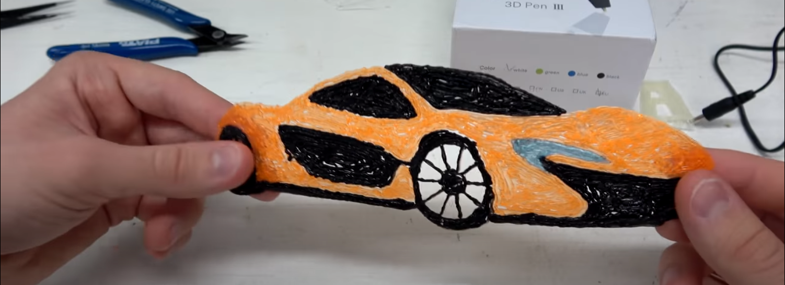

Ce programme est destiné à évoluer d'ici début juillet. Il représente une ébauche pour montrer l'avancement du projet avec les idées me venant au fur et à mesure. N'hésitez pas à me soumettre vos retours par mail : charles.vin@outlook.fr
La première semaine se passe à Saint-du-Nord, la deuxième à Cartignies et la troisième à Solre-le-Château. Animation en groupe de 10-15 enfants le matin, puis l'après-midi avec quelques enfants sur un projet particulier. Je pense avoir besoin d'une connexion internet, d'un projecteur pour afficher facilement les consignes, et éventuellement d'une imprimante pour les activités dessins
Initiation au pilotage des drones
Ce petit paragraphe fait je pense partie de l'ancien projet. Cependant je le laisse car un atelier 'Montage vidéo' est dans le "cahier des charges".
Cette activité vidéo aura pour finalité de faire participer chaque centre à la réalisation d'un mini-film autour du thème du pays des merveilles. Elle suivra la trame scénaristique inspirée de Game of Thrones mais avec plus de féerique :
- La paix en Sambre Avesnois
- Rompu par l'enlèvement d'une princesse et l’assassinat du roi d'un des centres
- Chaque centre aéré veut s'assoir sur le trône et défendre sa ville
- Une bataille sur fond vert
- Magicien, dragons
- Unification des centres aéré face à la menace du réchauffement climatique ? ou d'un grand méchant
L'utilisation de Fond vert et de la technique du Stop motion sera abordé.
Réalisation d'un film court en stop-motion.
A partir des tablettes graphiques, animer les dessins des enfants :
Vidéo de démonstration => Probablement trop ennuyeux pour les adolescents ??
L'utilisation de crayons d'impression 3D pour reproduire des formes, des dessins. Ces dessins pourront être choisis par les enfants (si dispo d'une imprimante) ou choisis parmi ceux que je ramène. Dessiner avec le crayon sera alors très facile car il suffira de décalquer. Ils pourront ramener leurs œuvres à leur domicile.  Par exemple une voiture, des lunettes, un cœur avec le nom de leurs parents, ...
Modélisation en 3D sur TinkerCad d'un quelconque petit objet puis impression pour lui donner plus tard dans la semaine. Exemple d'objet : Porte-clés, dès, lunettes, pièce d'échec, bagues, toupies, objet Fortnite.
Scratch, assez classique, montre les bases de l'algorithmique d'une manière ludique aux enfants. Autre site de code : https://declick.net/ Probablement des centaines d'autres possibilités
Mon cousin, qui est en 5ème, joue naturellement beaucoup à
Fortniteet m'avais parlé qu'il aimerait bien un peu savoir ce qui se passe behind the scene avec du code.
Je ne suis pas encore sur du projet ici. L'idée est qu'avec ce que les enfants ont appris avec l'activité précédente, il programme la carte pour faire un peu ceux qu'ils veulent. Il y a plein de tutoriel et de mini projet sur le site web. Je n'ai jamais eu de carte comme celle-ci en main, je ne connais pas encore les possibilités.